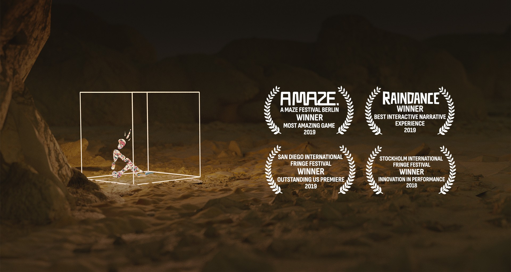

Kassinn / A Box In The Desert - Interactive VR Theatre
2017-2018
Direction, Design, Development

Imagine one day, you wake up inside an invisible box, unable to escape.
An engaging, but playful, interactive theatre performance with a live actor in virtual reality.
Will you trust this mysterious stranger? Or listen to the voice in your head, trying to get you out?
One of the world's first pieces of its kind, the show explores what happens by smashing together future-thinking theatre forms with technology.
The concept initially began as a short play by Nanna, written and performed in a conventional theatre in 2016 – after which Owen put forward the idea to re-create this piece in VR. Since then the piece has been performed over 300 times, across five countries and two continents.
We've brought audiences to laughter, to tears, to threatening us, to discover new truths within themseleves through the piece, even across language or cultural barriers. We simply don't know what to expect the next time we bring someone inside this world.
One person at a time experiences the piece inside of a 2 x 2m physical space, whilst the actor performs in a separate physical space. For our first outing, we used the Xsens motion capture suit (expertly handled by PuppIT), but currently the show involves two Oculus Rift setups, sharing the same virtual space using multiplayer networking.
Show control is handled by an operator, who can observe and control both events in the world and the ‘voice in your head’ via a Qlab interface, and we have a beautiful LED box created by Swedish engineering magicians Svartljus
After touring the piece throughout Europe and to the USA, we went back into the rehearsal room to re-create the experience for more than one audience member at a time. The result is Hliðstætt Fólk / Parallel People, which you can read more about above.